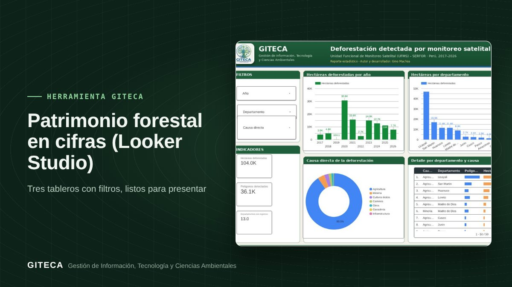

Patrimonio forestal en cifras: deforestación, concesiones e incendios con filtros
Reporte interactivo en Looker Studio con 36 158 polígonos de deforestación (2017–2026), concesiones por modalidad e incendios 2026.
Abrir el reporte ↗Gratis, en el navegador.

¿Necesitas cifras del sector forestal para una presentación, y las necesitas hoy?
Los datos del sector existen, pero llegan en tablas difíciles de resumir. Este reporte los agrega con R y los presenta en tres páginas interactivas de Looker Studio, con filtros por región, año y modalidad.
Antes y ahora
El proceso de siempre
- Descargar las tablas de cada fuente.
- Limpiarlas y resumirlas en Excel.
- Armar los gráficos para cada consulta.
Con la herramienta
- Abres el reporte.
- Filtras por región, año o modalidad.
- Copias los gráficos o compartes el enlace.
Tiempos de referencia estimados por el equipo GITECA; varían según el tamaño del área y la experiencia del usuario.
En la práctica: Incluye 36 158 polígonos de deforestación detectada por monitoreo satelital (2017–2026) y 1 781 concesiones forestales.
Qué hace
- Deforestación por monitoreo satelital 2017–2026.
- Concesiones forestales por modalidad.
- Incendios forestales 2026.
Para quién es
Empieza en 3 pasos
- Abre el reporte.
- Aplica los filtros.
- Comparte o descarga lo que necesites.
Patrimonio forestal en cifras (Looker Studio)Gratis, en el navegador.
Abrir el reporte ↗
Ten en cuenta: Datos del SERFOR agregados con R; verifica las cifras en la fuente oficial antes de citarlas. ¿Necesitas adaptarla a tu proyecto o capacitar a tu equipo? Escríbenos.